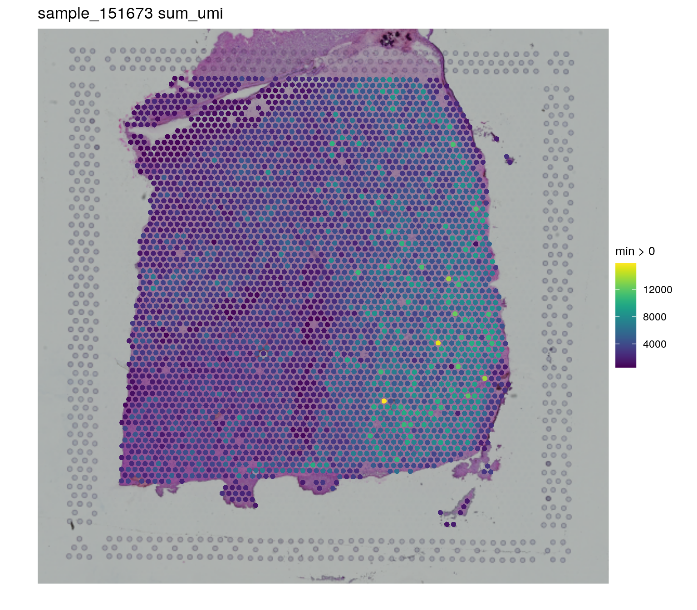
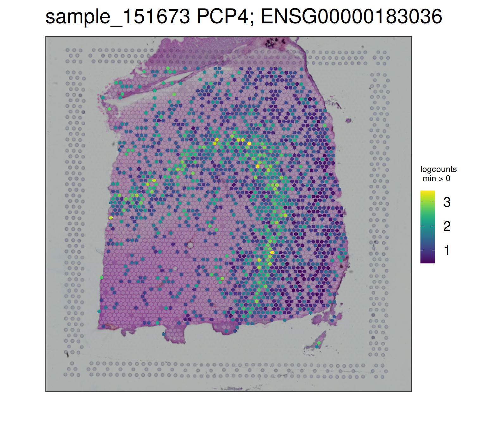

spatialLIBD overview. Source: Pardo et al. (2022).In the previous workflow, Chapter 15, you practiced some of the basics with a portion of the postmortem human brain dataset Maynard et al. (2021). The goal of this workflow is to learn what steps you need to carry out in order to create an interactive website to visualize this type of data. For this, we’ll use the spatialLIBD Bioconductor package Pardo et al. (2022).
spatialLIBD overview. Source: Pardo et al. (2022).Before we dive into the R code, let’s first revisit why you might want to use spatialLIBD. This package has a function, spatialLIBD::run_app(spe), which will create an interactive website using a SpatialExperiment object (spe). The interactive website it creates has several features that were initially designed for a specific dataset Maynard et al. (2021) and later made flexible for any dataset Pardo et al. (2022). These features include panels to visualize spots from the Visium platform by 10x Genomics:
Both options work with continuous and discrete variables such as the gene expression and clusters, respectively. The interactive version for discrete variables such as clusters is useful if you want to manually annotate Visium spots, as it was done in the initial project Maynard et al. (2021). spatialLIBD allows users to download the annotated spots and resume your spot annotation work later.

spatialLIBD::run_app(spatialLIBD::fetch_data('spe')) version 1.4.0 and then using the lasso selection, we selected a set of spots in the UMAP interactive plot colored by the estimated number of cells per spot (cell_count) on the bottom left, which automatically updated the other three plots.Visualizing genes or clusters across multiple tissue sections can be quite useful. For example, here we show the expression levels of PCP4 across two sets of spatially adjacent replicates. PCP4 is a marker gene for layer 5 in the grey matter of the dorsolateral prefrontal cortex (DLPFC) in the human brain. Spatially adjacent replicates are about 10 microns apart from each other and visualizations like the one below help assess the technical variability in the Visium technology.

spatialLIBD::run_app(spatialLIBD::fetch_data('spe')) version 1.4.0, selecting the PCP4 gene, selecting the paper gene color scale, changing the number of rows and columns in the grid 2, selecting two pairs of spatially adjacent replicate samples (151507, 151508, 151673, and 151674), and clicking on the upgrade grid plot button. Note that the default viridis gene color scale is color-blind friendly.You can try out a spatialLIBD-powered website yourself by opening it on your browser 1.
If you are interested in learning more about spatialLIBD, please check the spatialLIBD Bioconductor landing page or the pkgdown documentation website. In particular, we have two vignettes documents:
You can also read more about spatialLIBD in the associated publication.
citation("spatialLIBD")[1]## Pardo B, Spangler A, Weber LM, Hicks SC, Jaffe AE, Martinowich K,
## Maynard KR, Collado-Torres L (2022). "spatialLIBD: an R/Bioconductor
## package to visualize spatially-resolved transcriptomics data." _BMC
## Genomics_. doi:10.1186/s12864-022-08601-w
## <https://doi.org/10.1186/s12864-022-08601-w>,
## <https://doi.org/10.1186/s12864-022-08601-w>.
##
## A BibTeX entry for LaTeX users is
##
## @Article{,
## title = {spatialLIBD: an R/Bioconductor package to visualize spatially-resolved transcriptomics data},
## author = {Brenda Pardo and Abby Spangler and Lukas M. Weber and Stephanie C. Hicks and Andrew E. Jaffe and Keri Martinowich and Kristen R. Maynard and Leonardo Collado-Torres},
## year = {2022},
## journal = {BMC Genomics},
## doi = {10.1186/s12864-022-08601-w},
## url = {https://doi.org/10.1186/s12864-022-08601-w},
## }If you prefer to watch recordings of presentations related to the dataset Maynard et al. (2021) or spatialLIBD Pardo et al. (2022), check the following 2:
These slides were part of our 2021-04-27 webinar for BioTuring that you can watch on YouTube:
A recording of an earlier version of this talk is also available on YouTube.
You might also be interested in this video demonstration of spatialLIBD for the LIBD rstats club.
Ok, let’s get started! First we need to re-create the spe object from the Chapter 15 in the previous chapter. That chapter included code for visualizing results along the way, which we’ll skip here. Thus, we’ll use the following packages in addition to spatialLIBD:
SpatialExperiment: for storing our data in a common objectSTexampleData: for accessing the example datascater: for quality control checksscran: for normalization, dimension reduction, and clusteringigraph: for clustering algorithmsBiocFileCache: for downloading and storing datartracklayer: for importing gene annotation fileslobstr: for checking object memory usageYou’ll need to have the R version compatible with bioc-release 3 installed in your computer, as documented by Bioconductor. Alternatively, you can use the Bioconductor docker images. Next, if you haven’t installed these packages, please do so with the following R code.
if (!requireNamespace("BiocManager", quietly = TRUE)) {
install.packages("BiocManager")
}
## Check that you have a valid installation
BiocManager::valid()
## Install the required R packages for this workflow
BiocManager::install(c(
"SpatialExperiment",
"STexampleData",
"scater",
"scran",
"igraph",
"BiocFileCache",
"rtracklayer",
"lobstr",
"spatialLIBD"
))We can now run the following R code to re-make the spe object from the Chapter 15. This will take a bit of time.
## Load packages required for the
## "Visium human DLPFC workflow"
library("SpatialExperiment")
library("STexampleData")
library("scater")
library("scran")
library("igraph")
library("BiocFileCache")
library("rtracklayer")
library("lobstr")
library("spatialLIBD")
## Start tracking time
time_start <- Sys.time()
# load object
spe <- Visium_humanDLPFC()
# subset to keep only spots over tissue
spe <- spe[, colData(spe)$in_tissue == 1]
# identify mitochondrial genes
is_mito <- grepl("(^MT-)|(^mt-)", rowData(spe)$gene_name)
# calculate per-spot QC metrics and store in colData
spe <- addPerCellQC(spe, subsets = list(mito = is_mito))
# select QC thresholds
qc_lib_size <- colData(spe)$sum < 600
qc_detected <- colData(spe)$detected < 400
qc_mito <- colData(spe)$subsets_mito_percent > 28
qc_cell_count <- colData(spe)$cell_count > 10
# combined set of discarded spots
discard <- qc_lib_size | qc_detected | qc_mito | qc_cell_count
# store in object
colData(spe)$discard <- discard
# filter low-quality spots
spe <- spe[, !colData(spe)$discard]
# calculate logcounts using library size factors
spe <- logNormCounts(spe)
# remove mitochondrial genes
spe <- spe[!is_mito, ]
# fit mean-variance relationship
dec <- modelGeneVar(spe)
# select top HVGs
top_hvgs <- getTopHVGs(dec, prop = 0.1)
# compute PCA
set.seed(123)
spe <- runPCA(spe, subset_row = top_hvgs)
# compute UMAP on top 50 PCs
set.seed(123)
spe <- runUMAP(spe, dimred = "PCA")
# update column names for easier plotting
colnames(reducedDim(spe, "UMAP")) <- paste0("UMAP", 1:2)
# graph-based clustering
set.seed(123)
k <- 10
g <- buildSNNGraph(spe, k = k, use.dimred = "PCA")
g_walk <- igraph::cluster_walktrap(g)
clus <- g_walk$membership
# store cluster labels in column 'label' in colData
colLabels(spe) <- factor(clus)
# set gene names as row names for easier plotting
rownames(spe) <- rowData(spe)$gene_name
# test for marker genes
markers <- findMarkers(spe, test = "binom", direction = "up")
## Find the interesting markers for each cluster
interesting <- sapply(markers, function(x) x$Top <= 5)
colnames(interesting) <- paste0("gene_interest_", seq_len(length(markers)))
rowData(spe) <- cbind(rowData(spe), interesting)
## How long this code took to run
time_prereqs <- Sys.time()
time_prereqs - time_start## Time difference of 1.406717 minsNow that we have a spe object with quality control information, dimension reduction results, clustering data, among other things, we can proceed to visualize the object using spatialLIBD. Well, almost. First we need to modify the spe object, similar to steps we need to carry out when using spatialLIBD with 10x Genomics public datasets
Since the gene information is missing, we’ll add the gene annotation data from Gencode although you would ideally add this information from the same gene annotation you used for running spaceranger.
## Download the Gencode v32 GTF file and cache it
bfc <- BiocFileCache::BiocFileCache()
gtf_cache <- BiocFileCache::bfcrpath(
bfc,
paste0(
"ftp://ftp.ebi.ac.uk/pub/databases/gencode/Gencode_human/",
"release_32/gencode.v32.annotation.gtf.gz"
)
)## adding rname 'ftp://ftp.ebi.ac.uk/pub/databases/gencode/Gencode_human/release_32/gencode.v32.annotation.gtf.gz'## Show the GTF cache location
gtf_cache## BFC1
## "/root/.cache/R/BiocFileCache/6bc5814390d_gencode.v32.annotation.gtf.gz"## Import into R (takes ~1 min)
gtf <- rtracklayer::import(gtf_cache)
## Subset to genes only
gtf <- gtf[gtf$type == "gene"]
## Remove the .x part of the gene IDs
gtf$gene_id <- gsub("\\..*", "", gtf$gene_id)
## Set the names to be the gene IDs
names(gtf) <- gtf$gene_id
## Match the genes
match_genes <- match(rowData(spe)$gene_id, gtf$gene_id)
table(is.na(match_genes))##
## FALSE TRUE
## 33267 258## Drop the few genes for which we don't have information
spe <- spe[!is.na(match_genes), ]
match_genes <- match_genes[!is.na(match_genes)]
## Keep only some columns from the gtf
mcols(gtf) <- mcols(gtf)[, c("source", "type", "gene_id", "gene_name", "gene_type")]
## Save the "interest"ing columns from our original spe object
interesting <- rowData(spe)[, grepl("interest", colnames(rowData(spe)))]
## Add the gene info to our SPE object
rowRanges(spe) <- gtf[match_genes]
## Add back the "interest" coolumns
rowData(spe) <- cbind(rowData(spe), interesting)
## Inspect the gene annotation data we added
rowRanges(spe)## GRanges object with 33267 ranges and 11 metadata columns:
## seqnames ranges strand | source type
## <Rle> <IRanges> <Rle> | <factor> <factor>
## ENSG00000243485 chr1 29554-31109 + | HAVANA gene
## ENSG00000237613 chr1 34554-36081 - | HAVANA gene
## ENSG00000186092 chr1 65419-71585 + | HAVANA gene
## ENSG00000238009 chr1 89295-133723 - | HAVANA gene
## ENSG00000239945 chr1 89551-91105 - | HAVANA gene
## ... ... ... ... . ... ...
## ENSG00000160298 chr21 46300181-46323875 - | HAVANA gene
## ENSG00000160299 chr21 46324141-46445769 + | HAVANA gene
## ENSG00000160305 chr21 46458891-46570015 + | HAVANA gene
## ENSG00000160307 chr21 46598604-46605208 - | HAVANA gene
## ENSG00000160310 chr21 46635595-46665124 + | HAVANA gene
## gene_id gene_name gene_type gene_interest_1
## <character> <character> <character> <logical>
## ENSG00000243485 ENSG00000243485 MIR1302-2HG lncRNA TRUE
## ENSG00000237613 ENSG00000237613 FAM138A lncRNA TRUE
## ENSG00000186092 ENSG00000186092 OR4F5 protein_coding TRUE
## ENSG00000238009 ENSG00000238009 AL627309.1 lncRNA TRUE
## ENSG00000239945 ENSG00000239945 AL627309.3 lncRNA TRUE
## ... ... ... ... ...
## ENSG00000160298 ENSG00000160298 C21orf58 protein_coding FALSE
## ENSG00000160299 ENSG00000160299 PCNT protein_coding FALSE
## ENSG00000160305 ENSG00000160305 DIP2A protein_coding FALSE
## ENSG00000160307 ENSG00000160307 S100B protein_coding FALSE
## ENSG00000160310 ENSG00000160310 PRMT2 protein_coding FALSE
## gene_interest_2 gene_interest_3 gene_interest_4
## <logical> <logical> <logical>
## ENSG00000243485 TRUE TRUE TRUE
## ENSG00000237613 TRUE TRUE TRUE
## ENSG00000186092 TRUE TRUE TRUE
## ENSG00000238009 TRUE TRUE TRUE
## ENSG00000239945 TRUE TRUE TRUE
## ... ... ... ...
## ENSG00000160298 FALSE FALSE FALSE
## ENSG00000160299 FALSE FALSE FALSE
## ENSG00000160305 FALSE FALSE FALSE
## ENSG00000160307 FALSE FALSE FALSE
## ENSG00000160310 FALSE FALSE FALSE
## gene_interest_5 gene_interest_6
## <logical> <logical>
## ENSG00000243485 TRUE TRUE
## ENSG00000237613 TRUE TRUE
## ENSG00000186092 TRUE TRUE
## ENSG00000238009 TRUE TRUE
## ENSG00000239945 TRUE TRUE
## ... ... ...
## ENSG00000160298 FALSE FALSE
## ENSG00000160299 FALSE FALSE
## ENSG00000160305 FALSE FALSE
## ENSG00000160307 FALSE FALSE
## ENSG00000160310 FALSE FALSE
## -------
## seqinfo: 25 sequences from an unspecified genome; no seqlengthsNow that we have the gene annotation information, we can use it to add a few more pieces to our spe object that spatialLIBD will use. For example, we want to enable users to search genes by either their gene symbol or their Ensembl ID. We also like to visualize the amount and percent of the mitochondrial gene expression.
## Add information used by spatialLIBD
rowData(spe)$gene_search <- paste0(
rowData(spe)$gene_name, "; ", rowData(spe)$gene_id
)
## Compute chrM expression and chrM expression ratio
is_mito <- which(seqnames(spe) == "chrM")
spe$expr_chrM <- colSums(counts(spe)[is_mito, , drop = FALSE])
spe$expr_chrM_ratio <- spe$expr_chrM / spe$sum_umiNow that we have the full gene annotation information we need, we can proceed to add some last touches as well as filter the object to reduce the memory required for visualizing the data.
## Add a variable for saving the manual annotations
spe$ManualAnnotation <- "NA"
## Remove genes with no data
no_expr <- which(rowSums(counts(spe)) == 0)
## Number of genes with no counts
length(no_expr)## [1] 11596## [1] 34.85737spe <- spe[-no_expr, , drop = FALSE]
## Remove spots without counts
summary(spe$sum_umi)## Min. 1st Qu. Median Mean 3rd Qu. Max.
## 537 2414 3466 3870 4938 15862## If we had spots with no counts, we would remove them
if (any(spe$sum_umi == 0)) {
spots_no_counts <- which(spe$sum_umi == 0)
## Number of spots with no counts
print(length(spots_no_counts))
## Percent of spots with no counts
print(length(spots_no_counts) / ncol(spe) * 100)
spe <- spe[, -spots_no_counts, drop = FALSE]
}We think that we are ready to proceed to making our interactive website. Let’s use the spatialLIBD::check_spe() function, just to verify that we are right. If we aren’t, then it’ll try to tell us what we missed.
## Run check_spe() function
spatialLIBD::check_spe(spe)## class: SpatialExperiment
## dim: 21671 3524
## metadata(0):
## assays(2): counts logcounts
## rownames(21671): ENSG00000243485 ENSG00000238009 ... ENSG00000160307
## ENSG00000160310
## rowData names(12): source type ... gene_interest_6 gene_search
## colnames(3524): AAACAAGTATCTCCCA-1 AAACACCAATAACTGC-1 ...
## TTGTTTCCATACAACT-1 TTGTTTGTGTAAATTC-1
## colData names(23): barcode_id sample_id ... expr_chrM_ratio
## ManualAnnotation
## reducedDimNames(2): PCA UMAP
## mainExpName: NULL
## altExpNames(0):
## spatialCoords names(2) : pxl_col_in_fullres pxl_row_in_fullres
## imgData names(4): sample_id image_id data scaleFactor## End tracking time
time_end <- Sys.time()
## How long this code took to run
time_end - time_prereqs## Time difference of 36.25083 secsCreating our final spe object took 2.01089779138565 to run. So you might want to save this object for later use.
saveRDS(spe, file = "spe_workflow_Visium_spatialLIBD.rds")You can then re-load it with the following code on a later session.
spe <- readRDS("spe_workflow_Visium_spatialLIBD.rds")In order to visualize the data, we can then use spatialLIBD::vis_gene(). Note that we didn’t need to do all that hard work just for that. But well, this is a nice quick check before we try launching our interactive website.
## Sum of UMI
spatialLIBD::vis_gene(
spe = spe,
sampleid = "sample_151673",
geneid = "sum_umi"
)
## PCP4, a layer 5 marker gene
spatialLIBD::vis_gene(
spe = spe,
sampleid = "sample_151673",
geneid = rowData(spe)$gene_search[which(rowData(spe)$gene_name == "PCP4")]
)
As we wanted let’s proceed to visualize the data interactively with a spatialLIBD-powered website. We have lots of variables to choose from. We’ll specify which are our continuous and discrete variables in our spatialLIBD::run_app() call.
## Explore all the variables we can use
colData(spe)## DataFrame with 3524 rows and 23 columns
## barcode_id sample_id in_tissue array_row
## <character> <character> <integer> <integer>
## AAACAAGTATCTCCCA-1 AAACAAGTATCTCCCA-1 sample_151673 1 50
## AAACACCAATAACTGC-1 AAACACCAATAACTGC-1 sample_151673 1 59
## AAACAGAGCGACTCCT-1 AAACAGAGCGACTCCT-1 sample_151673 1 14
## AAACAGCTTTCAGAAG-1 AAACAGCTTTCAGAAG-1 sample_151673 1 43
## AAACAGGGTCTATATT-1 AAACAGGGTCTATATT-1 sample_151673 1 47
## ... ... ... ... ...
## TTGTTGTGTGTCAAGA-1 TTGTTGTGTGTCAAGA-1 sample_151673 1 31
## TTGTTTCACATCCAGG-1 TTGTTTCACATCCAGG-1 sample_151673 1 58
## TTGTTTCATTAGTCTA-1 TTGTTTCATTAGTCTA-1 sample_151673 1 60
## TTGTTTCCATACAACT-1 TTGTTTCCATACAACT-1 sample_151673 1 45
## TTGTTTGTGTAAATTC-1 TTGTTTGTGTAAATTC-1 sample_151673 1 7
## array_col ground_truth reference cell_count sum
## <integer> <character> <character> <integer> <numeric>
## AAACAAGTATCTCCCA-1 102 Layer3 Layer3 6 8458
## AAACACCAATAACTGC-1 19 WM WM 5 3769
## AAACAGAGCGACTCCT-1 94 Layer3 Layer3 2 5433
## AAACAGCTTTCAGAAG-1 9 Layer5 Layer5 4 4278
## AAACAGGGTCTATATT-1 13 Layer6 Layer6 6 4004
## ... ... ... ... ... ...
## TTGTTGTGTGTCAAGA-1 77 Layer5 Layer5 3 3966
## TTGTTTCACATCCAGG-1 42 WM WM 3 4324
## TTGTTTCATTAGTCTA-1 30 WM WM 4 2761
## TTGTTTCCATACAACT-1 27 Layer6 Layer6 3 2322
## TTGTTTGTGTAAATTC-1 51 Layer2 Layer2 5 6281
## detected subsets_mito_sum subsets_mito_detected
## <numeric> <numeric> <numeric>
## AAACAAGTATCTCCCA-1 3586 1407 13
## AAACACCAATAACTGC-1 1960 430 13
## AAACAGAGCGACTCCT-1 2424 1316 13
## AAACAGCTTTCAGAAG-1 2264 651 12
## AAACAGGGTCTATATT-1 2178 621 13
## ... ... ... ...
## TTGTTGTGTGTCAAGA-1 1982 789 13
## TTGTTTCACATCCAGG-1 2170 370 12
## TTGTTTCATTAGTCTA-1 1560 314 12
## TTGTTTCCATACAACT-1 1343 476 13
## TTGTTTGTGTAAATTC-1 2927 991 13
## subsets_mito_percent total discard sizeFactor
## <numeric> <numeric> <logical> <numeric>
## AAACAAGTATCTCCCA-1 16.6351 8458 FALSE 1.822839
## AAACACCAATAACTGC-1 11.4089 3769 FALSE 0.812282
## AAACAGAGCGACTCCT-1 24.2223 5433 FALSE 1.170902
## AAACAGCTTTCAGAAG-1 15.2174 4278 FALSE 0.921980
## AAACAGGGTCTATATT-1 15.5095 4004 FALSE 0.862928
## ... ... ... ... ...
## TTGTTGTGTGTCAAGA-1 19.89410 3966 FALSE 0.854739
## TTGTTTCACATCCAGG-1 8.55689 4324 FALSE 0.931894
## TTGTTTCATTAGTCTA-1 11.37269 2761 FALSE 0.595041
## TTGTTTCCATACAACT-1 20.49957 2322 FALSE 0.500429
## TTGTTTGTGTAAATTC-1 15.77774 6281 FALSE 1.353660
## label key sum_umi sum_gene
## <factor> <character> <numeric> <integer>
## AAACAAGTATCTCCCA-1 2 sample_151673_AAACAA.. 7051 3573
## AAACACCAATAACTGC-1 1 sample_151673_AAACAC.. 3339 1947
## AAACAGAGCGACTCCT-1 6 sample_151673_AAACAG.. 4117 2411
## AAACAGCTTTCAGAAG-1 2 sample_151673_AAACAG.. 3627 2252
## AAACAGGGTCTATATT-1 2 sample_151673_AAACAG.. 3383 2165
## ... ... ... ... ...
## TTGTTGTGTGTCAAGA-1 2 sample_151673_TTGTTG.. 3177 1969
## TTGTTTCACATCCAGG-1 1 sample_151673_TTGTTT.. 3954 2158
## TTGTTTCATTAGTCTA-1 1 sample_151673_TTGTTT.. 2447 1548
## TTGTTTCCATACAACT-1 4 sample_151673_TTGTTT.. 1846 1330
## TTGTTTGTGTAAATTC-1 6 sample_151673_TTGTTT.. 5290 2914
## expr_chrM expr_chrM_ratio ManualAnnotation
## <numeric> <numeric> <character>
## AAACAAGTATCTCCCA-1 0 0 NA
## AAACACCAATAACTGC-1 0 0 NA
## AAACAGAGCGACTCCT-1 0 0 NA
## AAACAGCTTTCAGAAG-1 0 0 NA
## AAACAGGGTCTATATT-1 0 0 NA
## ... ... ... ...
## TTGTTGTGTGTCAAGA-1 0 0 NA
## TTGTTTCACATCCAGG-1 0 0 NA
## TTGTTTCATTAGTCTA-1 0 0 NA
## TTGTTTCCATACAACT-1 0 0 NA
## TTGTTTGTGTAAATTC-1 0 0 NA## Run our shiny app
if (interactive()) {
spatialLIBD::run_app(
spe,
sce_layer = NULL,
modeling_results = NULL,
sig_genes = NULL,
title = "OSTA spatialLIBD workflow example",
spe_discrete_vars = c("ground_truth", "label", "ManualAnnotation"),
spe_continuous_vars = c(
"cell_count",
"sum_umi",
"sum_gene",
"expr_chrM",
"expr_chrM_ratio",
"sum",
"detected",
"subsets_mito_sum",
"subsets_mito_detected",
"subsets_mito_percent",
"total",
"sizeFactor"
),
default_cluster = "label"
)
}
Now that you have created a spatialLIBD-powered website, you might be interested in sharing it. To do so, it’ll be useful to have saved a small spe object using saveRDS() like we did earlier. The smaller the object, the better in terms of performance. For example, you might want to remove the lowly expressed genes to save space. One function you can use to measure how big your object is is lobstr::obj_size() as shown below.
## Object size
lobstr::obj_size(spe) / 1024^2 ## Convert to MB## 293.07 BIf your data is small enough, you might want to share your website by hosting on shinyapps.io by RStudio, which you can try for free. Once you have created your account, you’ll want to create an app.R file like the one we have on the spatialLIBD_demo directory.
## library("spatialLIBD")
## library("markdown") # for shinyapps.io
##
## ## spatialLIBD uses golem
## options("golem.app.prod" = TRUE)
##
## ## You need this to enable shinyapps to install Bioconductor packages
## options(repos = BiocManager::repositories())
##
## ## Load the data
## spe <- readRDS("spe_workflow_Visium_spatialLIBD.rds")
##
## ## Deploy the website
## spatialLIBD::run_app(
## spe,
## sce_layer = NULL,
## modeling_results = NULL,
## sig_genes = NULL,
## title = "OSTA spatialLIBD workflow example",
## spe_discrete_vars = c("ground_truth", "label", "ManualAnnotation"),
## spe_continuous_vars = c(
## "cell_count",
## "sum_umi",
## "sum_gene",
## "expr_chrM",
## "expr_chrM_ratio",
## "sum",
## "detected",
## "subsets_mito_sum",
## "subsets_mito_detected",
## "subsets_mito_percent",
## "total",
## "sizeFactor"
## ),
## default_cluster = "label",
## docs_path = "www"
## )You can then open R in a new session in the same directory where you saved the app.R file, run the code and click on the “publish” blue button at the top right of your RStudio window. You’ll then need to upload the app.R file, your spe_workflow_Visium_spatialLIBD.rds file and the files under the www directory which enable you to customize your spatialLIDB website.

The RStudio prompts will guide you along the process for authenticating to your shinyapps.io account, which will involve copy pasting some code that starts with rsconnect::setAccountInfo(). Alternatively, you can create a deploy.R script and write the code for uploading your files to shinyapps.io as shown below.
## library('rsconnect')
##
## ## Or you can go to your shinyapps.io account and copy this
## ## Here we do this to keep our information hidden.
## # load(".deploy_info.Rdata")
## # rsconnect::setAccountInfo(
## # name = deploy_info$name,
## # token = deploy_info$token,
## # secret = deploy_info$secret
## # )
##
## ## You need this to enable shinyapps to install Bioconductor packages
## options(repos = BiocManager::repositories())
##
## ## Deploy the app, that is, upload it to shinyapps.io
## rsconnect::deployApp(
## appFiles = c(
## "app.R",
## "spe_workflow_Visium_spatialLIBD.rds",
## dir("www", full.names = TRUE)
## ),
## appName = 'OSTA_spatialLIBD_demo',
## account = 'libd',
## server = 'shinyapps.io'
## )Note that we have copied the default www directory files from the spatialLIBD repository and adapted them to our liking. We then use these files with spatialLIBD::run_app(docs_path) in our app.R script. These files help us control portions of our spatialLIBD-powered website and customize it to our liking.
If you follow this workflow, you’ll end up with a website just like this one. In our case, we further configured our website through the shinyapps.io dashboard. We selected the following options:
Instance Size: 3X-Large (8GB)Max Worker Processes: 1Max Connections: 15The Max Worker Processes determines how many R sessions are open per instance. Then Max Connections specifies the number of connections to each R session. The Instance Size determines the memory available. In this case, 8000 / 300 is approximately 27, but we decided to be conservative and set the total number of users per instance to be 15. This is why it can be important to reduce the size of your spe object before sharing the website. Alternatively, you can rent an AWS Instance and deploy your app there, which is how http://spatial.libd.org/spatialLIBD is hosted along with these error configuration files.
Thank you for reading this far! In this workflow we showed you:
spatialLIBD,spe object from the Chapter 15 chapter,spe object to make it compatible with spatialLIBD,Overall, we hope that you found this information useful and we wish you the best luck with exploring and annotating your own Visium data!
Here’s the R session information for this workflow.
options(width = 120)
sessioninfo::session_info()## ─ Session info ───────────────────────────────────────────────────────────────────────────────────────────────────────
## setting value
## version R version 4.4.1 (2024-06-14)
## os Ubuntu 22.04.5 LTS
## system x86_64, linux-gnu
## ui X11
## language (EN)
## collate C
## ctype en_US.UTF-8
## tz Etc/UTC
## date 2024-09-28
## pandoc 3.4 @ /usr/bin/ (via rmarkdown)
##
## ─ Packages ───────────────────────────────────────────────────────────────────────────────────────────────────────────
## package * version date (UTC) lib source
## abind 1.4-8 2024-09-12 [2] RSPM (R 4.4.0)
## AnnotationDbi 1.67.0 2024-05-01 [2] Bioconductor 3.20 (R 4.4.0)
## AnnotationHub * 3.13.3 2024-08-19 [2] Bioconductor 3.20 (R 4.4.1)
## attempt 0.3.1 2020-05-03 [2] RSPM (R 4.4.0)
## beachmat 2.21.6 2024-09-05 [2] Bioconductor 3.20 (R 4.4.1)
## beeswarm 0.4.0 2021-06-01 [2] RSPM (R 4.4.0)
## benchmarkme 1.0.8 2022-06-12 [2] RSPM (R 4.4.0)
## benchmarkmeData 1.0.4 2020-04-23 [2] RSPM (R 4.4.0)
## Biobase * 2.65.1 2024-08-28 [2] Bioconductor 3.20 (R 4.4.1)
## BiocFileCache * 2.13.0 2024-05-01 [2] Bioconductor 3.20 (R 4.4.0)
## BiocGenerics * 0.51.1 2024-09-03 [2] Bioconductor 3.20 (R 4.4.1)
## BiocIO 1.15.2 2024-08-23 [2] Bioconductor 3.20 (R 4.4.1)
## BiocManager 1.30.25 2024-08-28 [2] CRAN (R 4.4.1)
## BiocNeighbors 1.99.1 2024-09-22 [2] Bioconductor 3.20 (R 4.4.1)
## BiocParallel 1.39.0 2024-05-01 [2] Bioconductor 3.20 (R 4.4.0)
## BiocSingular 1.21.4 2024-09-22 [2] Bioconductor 3.20 (R 4.4.1)
## BiocVersion 3.20.0 2024-05-01 [2] Bioconductor 3.20 (R 4.4.1)
## Biostrings 2.73.2 2024-09-26 [2] Bioconductor 3.20 (R 4.4.1)
## bit 4.5.0 2024-09-20 [2] RSPM (R 4.4.0)
## bit64 4.5.2 2024-09-22 [2] RSPM (R 4.4.0)
## bitops 1.0-8 2024-07-29 [2] RSPM (R 4.4.0)
## blob 1.2.4 2023-03-17 [2] RSPM (R 4.4.0)
## bluster 1.15.1 2024-09-06 [2] Bioconductor 3.20 (R 4.4.1)
## bslib 0.8.0 2024-07-29 [2] RSPM (R 4.4.0)
## cachem 1.1.0 2024-05-16 [2] RSPM (R 4.4.0)
## cli 3.6.3 2024-06-21 [2] RSPM (R 4.4.0)
## cluster 2.1.6 2023-12-01 [3] CRAN (R 4.4.1)
## codetools 0.2-20 2024-03-31 [3] CRAN (R 4.4.1)
## colorspace 2.1-1 2024-07-26 [2] RSPM (R 4.4.0)
## config 0.3.2 2023-08-30 [2] RSPM (R 4.4.0)
## cowplot 1.1.3 2024-01-22 [2] RSPM (R 4.4.0)
## crayon 1.5.3 2024-06-20 [2] RSPM (R 4.4.0)
## curl 5.2.3 2024-09-20 [2] RSPM (R 4.4.0)
## data.table 1.16.0 2024-08-27 [2] RSPM (R 4.4.0)
## DBI 1.2.3 2024-06-02 [2] RSPM (R 4.4.0)
## dbplyr * 2.5.0 2024-03-19 [2] RSPM (R 4.4.0)
## DelayedArray 0.31.11 2024-08-04 [2] Bioconductor 3.20 (R 4.4.1)
## digest 0.6.37 2024-08-19 [2] RSPM (R 4.4.0)
## doParallel 1.0.17 2022-02-07 [2] RSPM (R 4.4.0)
## dotCall64 1.1-1 2023-11-28 [2] RSPM (R 4.4.0)
## dplyr 1.1.4 2023-11-17 [2] RSPM (R 4.4.0)
## dqrng 0.4.1 2024-05-28 [2] RSPM (R 4.4.0)
## DT 0.33 2024-04-04 [2] RSPM (R 4.4.0)
## edgeR 4.3.16 2024-09-22 [2] Bioconductor 3.20 (R 4.4.1)
## evaluate 1.0.0 2024-09-17 [2] RSPM (R 4.4.0)
## ExperimentHub * 2.13.1 2024-07-31 [2] Bioconductor 3.20 (R 4.4.1)
## fansi 1.0.6 2023-12-08 [2] RSPM (R 4.4.0)
## farver 2.1.2 2024-05-13 [2] RSPM (R 4.4.0)
## fastmap 1.2.0 2024-05-15 [2] RSPM (R 4.4.0)
## fields 16.2 2024-06-27 [2] RSPM (R 4.4.0)
## filelock 1.0.3 2023-12-11 [2] RSPM (R 4.4.0)
## FNN 1.1.4.1 2024-09-22 [2] RSPM (R 4.4.0)
## foreach 1.5.2 2022-02-02 [2] RSPM (R 4.4.0)
## generics 0.1.3 2022-07-05 [2] RSPM (R 4.4.0)
## GenomeInfoDb * 1.41.1 2024-05-24 [2] Bioconductor 3.20 (R 4.4.0)
## GenomeInfoDbData 1.2.12 2024-06-24 [2] Bioconductor
## GenomicAlignments 1.41.0 2024-05-01 [2] Bioconductor 3.20 (R 4.4.0)
## GenomicRanges * 1.57.1 2024-06-12 [2] Bioconductor 3.20 (R 4.4.0)
## ggbeeswarm 0.7.2 2023-04-29 [2] RSPM (R 4.4.0)
## ggplot2 * 3.5.1 2024-04-23 [2] RSPM (R 4.4.0)
## ggrepel 0.9.6 2024-09-07 [2] RSPM (R 4.4.0)
## glue 1.7.0 2024-01-09 [2] RSPM (R 4.4.0)
## golem 0.5.1 2024-08-27 [2] RSPM (R 4.4.0)
## gridExtra 2.3 2017-09-09 [2] RSPM (R 4.4.0)
## gtable 0.3.5 2024-04-22 [2] RSPM (R 4.4.0)
## htmltools 0.5.8.1 2024-04-04 [2] RSPM (R 4.4.0)
## htmlwidgets 1.6.4 2023-12-06 [2] RSPM (R 4.4.0)
## httpuv 1.6.15 2024-03-26 [2] RSPM (R 4.4.0)
## httr 1.4.7 2023-08-15 [2] RSPM (R 4.4.0)
## igraph * 2.0.3 2024-03-13 [2] RSPM (R 4.4.0)
## IRanges * 2.39.2 2024-07-17 [2] Bioconductor 3.20 (R 4.4.1)
## irlba 2.3.5.1 2022-10-03 [2] RSPM (R 4.4.0)
## iterators 1.0.14 2022-02-05 [2] RSPM (R 4.4.0)
## jquerylib 0.1.4 2021-04-26 [2] RSPM (R 4.4.0)
## jsonlite 1.8.9 2024-09-20 [2] RSPM (R 4.4.0)
## KEGGREST 1.45.1 2024-06-17 [2] Bioconductor 3.20 (R 4.4.0)
## knitr 1.48 2024-07-07 [2] RSPM (R 4.4.0)
## labeling 0.4.3 2023-08-29 [2] RSPM (R 4.4.0)
## later 1.3.2 2023-12-06 [2] RSPM (R 4.4.0)
## lattice 0.22-6 2024-03-20 [3] CRAN (R 4.4.1)
## lazyeval 0.2.2 2019-03-15 [2] RSPM (R 4.4.0)
## lifecycle 1.0.4 2023-11-07 [2] RSPM (R 4.4.0)
## limma 3.61.11 2024-09-26 [2] Bioconductor 3.20 (R 4.4.1)
## lobstr * 1.1.2 2022-06-22 [2] RSPM (R 4.4.0)
## locfit 1.5-9.10 2024-06-24 [2] RSPM (R 4.4.0)
## magick 2.8.5 2024-09-20 [2] RSPM (R 4.4.0)
## magrittr 2.0.3 2022-03-30 [2] RSPM (R 4.4.0)
## maps 3.4.2 2023-12-15 [2] RSPM (R 4.4.0)
## Matrix 1.7-0 2024-04-26 [3] CRAN (R 4.4.1)
## MatrixGenerics * 1.17.0 2024-05-01 [2] Bioconductor 3.20 (R 4.4.0)
## matrixStats * 1.4.1 2024-09-08 [2] RSPM (R 4.4.0)
## memoise 2.0.1 2021-11-26 [2] RSPM (R 4.4.0)
## metapod 1.13.0 2024-05-01 [2] Bioconductor 3.20 (R 4.4.0)
## mime 0.12 2021-09-28 [2] RSPM (R 4.4.0)
## munsell 0.5.1 2024-04-01 [2] RSPM (R 4.4.0)
## paletteer 1.6.0 2024-01-21 [2] RSPM (R 4.4.0)
## pillar 1.9.0 2023-03-22 [2] RSPM (R 4.4.0)
## pkgconfig 2.0.3 2019-09-22 [2] RSPM (R 4.4.0)
## plotly 4.10.4 2024-01-13 [2] RSPM (R 4.4.0)
## png 0.1-8 2022-11-29 [2] RSPM (R 4.4.0)
## prettyunits 1.2.0 2023-09-24 [2] RSPM (R 4.4.0)
## promises 1.3.0 2024-04-05 [2] RSPM (R 4.4.0)
## purrr 1.0.2 2023-08-10 [2] RSPM (R 4.4.0)
## R6 2.5.1 2021-08-19 [2] RSPM (R 4.4.0)
## rappdirs 0.3.3 2021-01-31 [2] RSPM (R 4.4.0)
## RColorBrewer 1.1-3 2022-04-03 [2] RSPM (R 4.4.0)
## Rcpp 1.0.13 2024-07-17 [2] RSPM (R 4.4.0)
## RCurl 1.98-1.16 2024-07-11 [2] RSPM (R 4.4.0)
## rematch2 2.1.2 2020-05-01 [2] RSPM (R 4.4.0)
## restfulr 0.0.15 2022-06-16 [2] RSPM (R 4.4.0)
## rjson 0.2.23 2024-09-16 [2] RSPM (R 4.4.0)
## rlang 1.1.4 2024-06-04 [2] RSPM (R 4.4.0)
## rmarkdown 2.28 2024-08-17 [2] RSPM (R 4.4.0)
## Rsamtools 2.21.2 2024-09-26 [2] Bioconductor 3.20 (R 4.4.1)
## RSQLite 2.3.7 2024-05-27 [2] RSPM (R 4.4.0)
## rsvd 1.0.5 2021-04-16 [2] RSPM (R 4.4.0)
## rtracklayer * 1.65.0 2024-05-01 [2] Bioconductor 3.20 (R 4.4.0)
## S4Arrays 1.5.9 2024-09-26 [2] Bioconductor 3.20 (R 4.4.1)
## S4Vectors * 0.43.2 2024-07-17 [2] Bioconductor 3.20 (R 4.4.1)
## sass 0.4.9 2024-03-15 [2] RSPM (R 4.4.0)
## ScaledMatrix 1.13.0 2024-05-01 [2] Bioconductor 3.20 (R 4.4.0)
## scales 1.3.0 2023-11-28 [2] RSPM (R 4.4.0)
## scater * 1.33.4 2024-07-21 [2] Bioconductor 3.20 (R 4.4.1)
## scran * 1.33.2 2024-09-06 [2] Bioconductor 3.20 (R 4.4.1)
## scuttle * 1.15.4 2024-08-14 [2] Bioconductor 3.20 (R 4.4.1)
## sessioninfo 1.2.2 2021-12-06 [2] RSPM (R 4.4.0)
## shiny 1.9.1 2024-08-01 [2] RSPM (R 4.4.0)
## shinyWidgets 0.8.7 2024-09-23 [2] RSPM (R 4.4.0)
## SingleCellExperiment * 1.27.2 2024-05-24 [2] Bioconductor 3.20 (R 4.4.0)
## spam 2.10-0 2023-10-23 [2] RSPM (R 4.4.0)
## SparseArray 1.5.40 2024-09-26 [2] Bioconductor 3.20 (R 4.4.1)
## SpatialExperiment * 1.15.1 2024-06-20 [2] Bioconductor 3.20 (R 4.4.0)
## spatialLIBD * 1.17.8 2024-07-25 [2] Bioconductor 3.20 (R 4.4.1)
## statmod 1.5.0 2023-01-06 [2] RSPM (R 4.4.0)
## STexampleData * 1.13.3 2024-05-21 [2] Bioconductor 3.20 (R 4.4.0)
## SummarizedExperiment * 1.35.1 2024-06-28 [2] Bioconductor 3.20 (R 4.4.1)
## tibble 3.2.1 2023-03-20 [2] RSPM (R 4.4.0)
## tidyr 1.3.1 2024-01-24 [2] RSPM (R 4.4.0)
## tidyselect 1.2.1 2024-03-11 [2] RSPM (R 4.4.0)
## UCSC.utils 1.1.0 2024-05-01 [2] Bioconductor 3.20 (R 4.4.0)
## utf8 1.2.4 2023-10-22 [2] RSPM (R 4.4.0)
## uwot 0.2.2 2024-04-21 [2] RSPM (R 4.4.0)
## vctrs 0.6.5 2023-12-01 [2] RSPM (R 4.4.0)
## vipor 0.4.7 2023-12-18 [2] RSPM (R 4.4.0)
## viridis 0.6.5 2024-01-29 [2] RSPM (R 4.4.0)
## viridisLite 0.4.2 2023-05-02 [2] RSPM (R 4.4.0)
## withr 3.0.1 2024-07-31 [2] RSPM (R 4.4.0)
## xfun 0.47 2024-08-17 [2] RSPM (R 4.4.0)
## XML 3.99-0.17 2024-06-25 [2] RSPM (R 4.4.0)
## xtable 1.8-4 2019-04-21 [2] RSPM (R 4.4.0)
## XVector 0.45.0 2024-05-01 [2] Bioconductor 3.20 (R 4.4.0)
## yaml 2.3.10 2024-07-26 [2] RSPM (R 4.4.0)
## zlibbioc 1.51.1 2024-06-05 [2] Bioconductor 3.20 (R 4.4.0)
##
## [1] /tmp/Rtmp68ymOP/Rinst8c3bb54f87
## [2] /usr/local/lib/R/site-library
## [3] /usr/local/lib/R/library
##
## ──────────────────────────────────────────────────────────────────────────────────────────────────────────────────────Check https://github.com/LieberInstitute/spatialLIBD#shiny-website-mirrors in case you need to use a mirror. shiny-powered websites work best on browsers such as Google Chrome and Mozilla Firefox, among others.↩︎
Originally available at https://github.com/LieberInstitute/spatialLIBD/blob/master/inst/app/www/documentation_spe.md#slides-and-videos.↩︎
This book is under development, so right now you actually need to use bioc-devel. Once this book is submitted to Bioconductor, then it’ll work with bioc-release. TODO: remove this comment when the book is available on bioc-release.↩︎